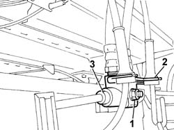
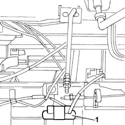

3340B92 CONNECTOR AT REAR SUSPENSION AXLE FOR REAR BRAKE PIPES - R.R.
- Path
- Procedures > 33 BRAKING SYSTEM > 3340 ANTI-LOCK BRAKE SYSTEM (ABS) > 3340B ABS SYSTEM PIPES > 3340B92 CONNECTOR AT REAR SUSPENSION AXLE FOR REAR BRAKE PIPES - R.R.
- Kind
- repair procedure (removal / refitting; the operation number is the code)
- Applies to
- all engines; all production periods
- Interactive page
- https://sloeber94.github.io/elrnDB-fDct/en/#/244001143
Applies to: all engines; all production periods
 Removing
Removing
 Refitting
Refitting- Position the vehicle on the lift.
- Remove the protective cap from the bleed valve on the rear brake caliper.
- Connect the recovery device (pipe and reservoir) to the rear brake caliper bleed valve.
- Operate the brake pedal until the brake/clutch reservoir is drained.
Op. 3340B34 INTERMEDIATE FLEXIBLE PIPE (ONE), LEFT OR RIGHT, TO THE REAR BRAKES - R.R.
1. Undo the nut fixing the connector at the rear suspension axle for the rear brake pipes on the rear suspension axle.
2. Release the bracket and cables for the ABS sensors.
3. Undo the rigid pipe connectors at the rear suspension axle.

Applies to: all engines; all production periods
- Release the rigid pipes at the rear suspension axle from the springs.
1. Remove the connector at the rear suspension axle for the rear brake pipes.

Applies to: all engines; all production periods
Refitting
Removing- Fit the rigid pipes at the rear suspension axle to the springs.
- Fasten the connector at the rear suspension axle for the rear brake pipes.
- Tighten the rigid pipes to the rear suspension axle.
- Secure the ABS sensor cables
Op. 3340B34 INTERMEDIATE FLEXIBLE PIPE (ONE), LEFT OR RIGHT, TO THE REAR BRAKES - R.R.
Op. 0010T65 HYDRAULIC BRAKE SYSTEM BLEED AIR
- Remove the vehicle from the lift.
- Test the operation of the braking system.